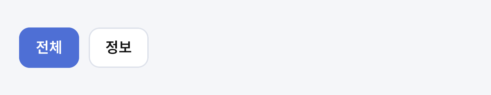
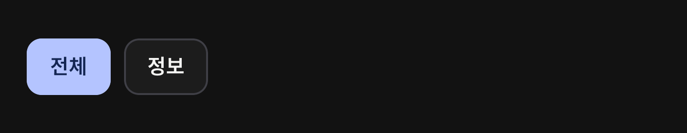

WidgetGalleryFilterChip
템플릿과 보관함 갤러리의 조건을 선택합니다.
- 컴포넌트 ID
widget-gallery-filter-chip- 분류
- 선택
- 구현
WidgetGalleryFilterChip·MyWidget/app/src/main/java/com/mywidget/editor/core/ui/WidgetGalleryFilterChip.kt:28- 주요 API
- label, selected, onClick, modifier
- 지원 상태
- 선택
- 미선택
- 변형
- 가변 문구 필터
- 크기
- 최소 터치 48×48dp
- 시각 높이 최소 34dp·반경 9dp
- 테마·토큰
- primary/onPrimary
- surface/onSurface
- outlineVariant
- 접근성·사용 규칙
- 하나의 필터 역할에 선택 상태를 연결하고 큰 글꼴의 글자를 보존합니다.
- 공통 사용 여부
- 보관함 크기 필터와 템플릿 카테고리 필터에서 사용
- 설계 품질
- 필터의 작은 시각 표면과 최소 터치 영역을 독립적으로 유지함
- 판단
- 기존 컴포넌트 개선
- 판단 근거
- 공유 필터에 48dp 터치와 선택 의미를 적용했습니다. 갤러리 필터에는 고정 88dp 탐색 탭 규격이 필요하지 않습니다.
- 구현·문서
- 현재 소스 위치와 심볼 확인
- 렌더링
- 네이티브 캡처 있음
코드 예시
Row(horizontalArrangement = Arrangement.spacedBy(8.dp)) {
WidgetGalleryFilterChip("전체", selected = true, onClick = {})
WidgetGalleryFilterChip("정보", selected = false, onClick = {})
}Android 네이티브 예시
아래 캡처에 표시된 상태와 기기 조건을 확인했습니다.

411 × 891 dp · 560 dpi · 글꼴 1배 · API 35 · ko-KR
캡처 기준 HEAD
ff118cc8d · 소스 지문 73da2a0be891 · 2026-11-13T10:23:11.274577Z
411 × 891 dp · 560 dpi · 글꼴 1배 · API 35 · ko-KR
캡처 기준 HEAD
ff118cc8d · 소스 지문 73da2a0be891 · 2026-11-13T10:23:11.274577Z